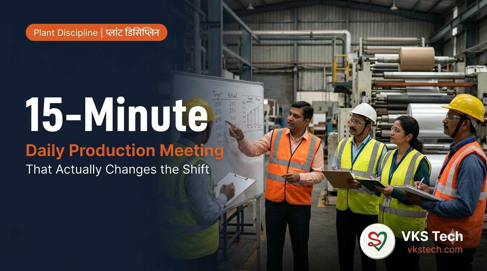
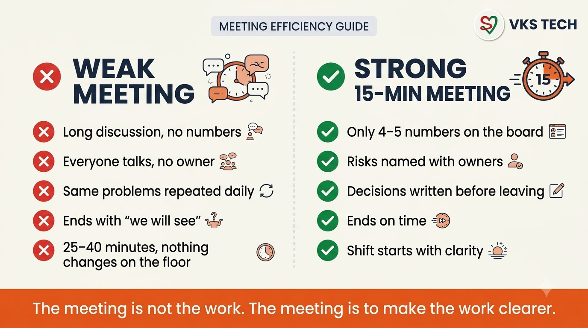
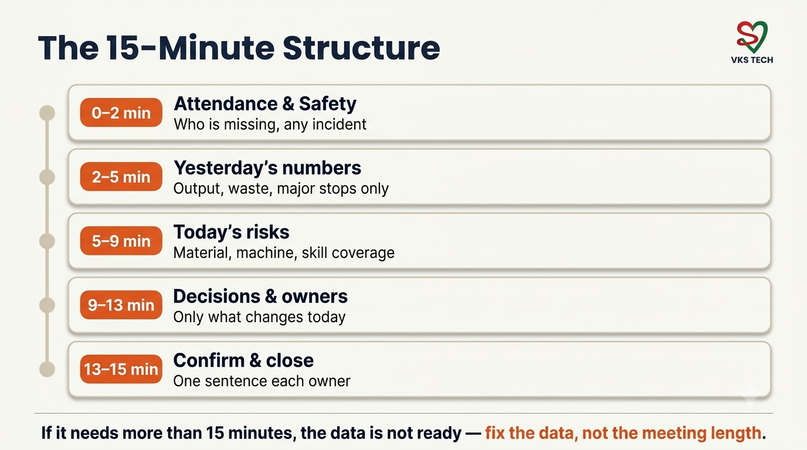
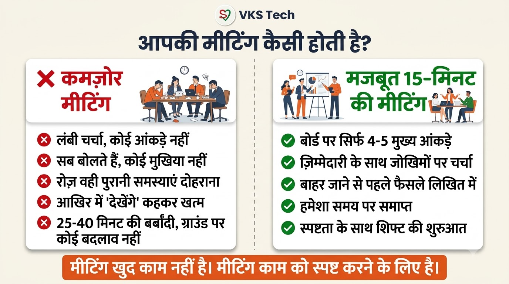
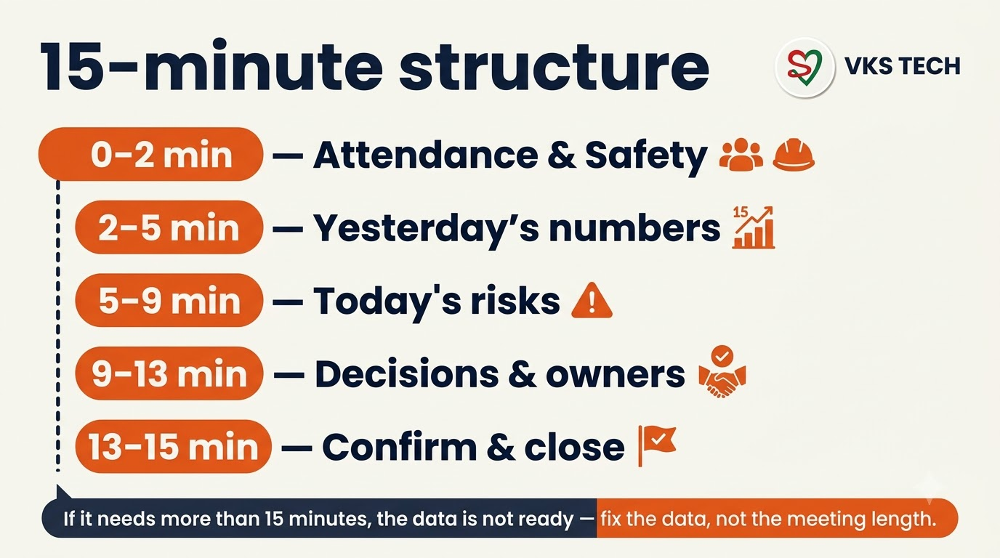

⏱️ How to Run a 15-Minute Daily Production Meeting That Actually Changes the Shift
📖 10-min read | Plant Discipline Guide | Simple language, real impact
Most daily production meetings in Indian packaging plants last 25–40 minutes. They feel busy. They rarely change what happens on the floor in the next eight hours.
A good meeting is short, number-driven, and ends with clear owners. This blog gives you a practical 15-minute structure that works for metalliser and converting plants — and shows how to keep it alive with the tools you already have.
Why Most Daily Meetings Fail
- No fixed agenda — conversation drifts to yesterday’s stories.
- No numbers on the board — opinions replace facts.
- No owners — “we will check” is not a decision.
- Wrong people talking — the person who can act is silent or absent.
- No link to shift handover — morning meeting and shift change stay disconnected.
The result: the same issues appear every day, and the plant pays in startup delays, waste, and firefighting.

The 15-Minute Structure (Use This Exactly)

- 0–2 min — Attendance & Safety
Who is missing? Any safety or quality incident from last shift? One sentence only. - 2–5 min — Yesterday’s numbers
Only four numbers: Output (or metres), Waste %, Major stops (count + total minutes), and one quality flag. No long stories. - 5–9 min — Today’s risks
Material readiness, machine status, and skill coverage on critical machines. This is where Man Power helps — you can see who is present, who is competent on key skills, and whether coverage is thin. - 9–13 min — Decisions & owners
Maximum three decisions. Each decision has one name and a time. Write it where everyone can see. - 13–15 min — Confirm & close
Each owner repeats in one sentence what they will do. Meeting ends on time.
If a topic needs more than two minutes of discussion, it does not belong in the daily meeting. Park it for a separate short huddle after the meeting or for a focused session with Mentor App coaching if it is a process issue.
What Data Must Be Ready Before the Meeting Starts
The meeting is only as good as the board. Prepare these before people sit:
- Previous shift output and waste (from production log or simple sheet)
- Major stops list (reason + minutes)
- Today’s planned jobs / recipes
- Leave and skill coverage on critical machines (visible in Man Power)
- Open issues from the last shift handover
When handover discipline (Blog 92) and the skill matrix (Blog 93) are in place, this preparation takes only a few minutes.
How the VKS Tech Tools Support the Meeting
- Man Power — Live who-is-in, skill coverage on critical tasks, leave view, and shift handover notes. The meeting stops guessing about manpower.
- Mentor App — When the same process problem keeps appearing in the meeting, book a focused 1:1 or assign a free module instead of repeating the complaint every morning.
- PackLink — Use only when the real constraint is missing competent people and internal training will take too long.
30-Day Adoption Plan
Week 1 — Run the 15-minute structure on one line or one section only. Keep a printed or digital board with the five time blocks.
Week 2 — Make data preparation compulsory before the meeting. Use Man Power for attendance and skill coverage.
Week 3 — Add the link to shift handover notes so the meeting starts from facts, not memory.
Week 4 — Review: Did average meeting time stay under 15–17 minutes? Did the same problems reduce? Adjust the board, not the clock.
Key Takeaway
⏱️ 15-मिनट की डेली प्रोडक्शन मीटिंग कैसे चलाएँ जो वास्तव में शिफ्ट बदल दे
📖 11-min read | प्लांट डिसिप्लिन गाइड | सरल भाषा, असली असर
ज्यादातर भारतीय पैकेजिंग प्लांट्स में डेली प्रोडक्शन मीटिंग 25–40 मिनट चलती है। व्यस्त लगती है। लेकिन अगले आठ घंटों में फर्श पर क्या होगा, यह शायद ही बदलती है।
अच्छी मीटिंग छोटी होती है, नंबर्स पर चलती है, और साफ ओनर्स के साथ खत्म होती है। यह ब्लॉग मेटलाइज़र और कन्वर्टिंग प्लांट्स के लिए एक व्यावहारिक 15-मिनट स्ट्रक्चर देता है।
ज्यादातर डेली मीटिंग्स क्यों फेल होती हैं
- कोई तय एजेंडा नहीं — बात कल की कहानियों में भटक जाती है।
- बोर्ड पर नंबर्स नहीं — राय तथ्यों की जगह ले लेती है।
- कोई ओनर नहीं — “देखते हैं” कोई फैसला नहीं है।
- गलत लोग बोलते हैं — जो एक्ट कर सकता है वह चुप या अनुपस्थित रहता है।
- शिफ्ट हैंडओवर से लिंक नहीं — सुबह की मीटिंग और शिफ्ट चेंज अलग-अलग रह जाते हैं।

15-मिनट का स्ट्रक्चर (इसे ही इस्तेमाल करें)

- 0–2 मिनट — हाजिरी और सुरक्षा
कौन नहीं आया? पिछली शिफ्ट का कोई सेफ्टी या क्वालिटी इंसिडेंट? सिर्फ एक वाक्य। - 2–5 मिनट — कल के नंबर्स
सिर्फ चार नंबर: आउटपुट, वेस्ट %, मेजर स्टॉप्स, एक क्वालिटी फ्लैग। लंबी कहानियाँ नहीं। - 5–9 मिनट — आज के रिस्क
मटेरियल, मशीन, और क्रिटिकल मशीनों पर स्किल कवरेज। यहाँ Man Power मदद करता है। - 9–13 मिनट — फैसले और ओनर्स
ज्यादा से ज्यादा तीन फैसले। हर फैसले का एक नाम और समय। सबके सामने लिखें। - 13–15 मिनट — कन्फर्म और बंद
हर ओनर एक वाक्य में दोहराए कि वह क्या करेगा। समय पर मीटिंग खत्म।
अगर किसी टॉपिक को दो मिनट से ज्यादा चर्चा चाहिए, तो वह डेली मीटिंग में नहीं आता। मीटिंग के बाद छोटी हडल या प्रोसेस इश्यू होने पर Mentor App कोचिंग के लिए रखें।
VKS Tech टूल्स कैसे मदद करते हैं
- Man Power — लाइव हाजिरी, स्किल कवरेज, लीव, शिफ्ट हैंडओवर नोट्स।
- Mentor App — जब वही प्रोसेस समस्या बार-बार आए तो फोकस्ड कोचिंग।
- PackLink — जब असली कमी सक्षम लोगों की हो और आंतरिक ट्रेनिंग लंबी पड़े।